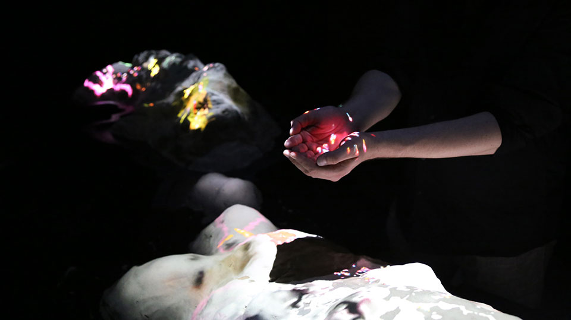

About
The Alice lab for computational worldmaking develops transferable knowledge and creative coding technology as well as intensifying computationally literate art practice in the construction of responsive artificial worlds experienced through rapidly emerging mixed/hybrid reality technologies including both Virtual Reality (VR) and Augmented Reality (AR). Inspired by the creativity of nature, its research-creation program leverages strong simulation and the self-modifying capacity of computational media to create artificial worlds whose rules can be rewritten while participants interact within them, pioneering heightened levels of human-machine interaction and intensified aesthetic experience through meaningful engagement using the whole body.